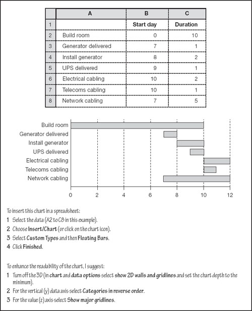

Project planning
A little at a time
So far, I have assumed that a project is treated as one cohesive lump. In practice, you will want to try to break it into smaller units. The results of each stage will signal a go-no-go for the next one. For example, if you are trying to build a better mousetrap, you might treat it as several, smaller projects – a board, spring, a hinged-wire, etc. If you build a prototype board and it passes inspection, you go on to the next project – the spring. If that fails, you can still sell small cheese boards. If you assign a probability of success to each stage, you can work out the overall chance of succeeding before you start – I will return to this intriguing thought in Chapter 23.
Project planning software, such as Microsoft Project, helps you to document the required activities at an appropriate level of detail, although it requires a little effort to learn.
How long will it take?
There is a saying that the expert is the one who says it will take longest and cost the most. We have dwelt extensively on costs, and will return to them. Let us chat for a while about estimating completion times.
Critical paths
For any one project, or sub-project, start by identifying the activities that have to be undertaken, and their inter-relationships. Start with the big picture and work inwards.
For example, our company is going to install a new network server. Major activities include preparing the site, installing the server, installing server software, testing, and so on. The first major phase, preparing the site, involves constructing a secure server room, a backup power generator, uninterrupted power supply units, electrical cabling, network cabling, and communications cabling. Each one of these tasks has its own set of activities. Constructing the secure server room includes selecting a contractor, obtaining building permits, undertaking concreting and carpentry, installing air conditioning, fire sprinklers and smoke alarms, and so on. Of course, each one of these jobs breaks down to a further level of detail.
Remember, projects always run late, always come in over budget, and always undershoot the revenue targets. Why will yours be different?
Some of these activities can be carried out concurrently (e.g. building the server room and installing the generators outside), while others are consecutive (the room must be finished before the server can be installed). When you have estimated the duration for each of the consecutive activities, you can work out the shortest possible completion time for the whole project. Those activities which determine the overall timing are said to be on the critical path. This technique is known as critical path analysis (CPA) or method (CPM).
To help you identify the critical path, you can sketch tree diagrams which illustrate the activities. They branch when two or more activities are carried out consecutively, and eventually all the twigs come back together at the completion point. You can also illustrate this as a Gantt chart where the duration of each activity is indicated by the length of a horizontal bar (as in Fig. 21.4).
Fig 21.4. Project plans illustrated
Spreadsheets to the rescue
You may be happy to know that spreadsheets can help with project planning. Figure 21.4 shows an extract from a worksheet with a selection of activities listed in the first column. The day on which the activities should start is in the second column, and the duration of each activity is in column C. Below the table is a chart, created with a few mouse clicks, as explained in the figure.
The good thing is that you can amend the figures in the table and watch the chart update automatically. For example, I wanted the installation of the generator to finish on the same day that the room was completed, so by changing the value in B4 I could move the bar until it was in the right place (much easier than subtracting 2 from 10). This makes it clear that the latest date for delivery of the generator is day 8. It could perhaps be delivered earlier than this.
Another point is that the cabling work inside the server room cannot begin until the room is finished. However, the networking cabling outside the room can start earlier – and we can see that it must start no later than day 7 to coincide with the completion of the electrical cabling.
By working through the activities, it becomes clear that building the room and fitting the electrical cabling are the two consecutive tasks which take the longest – they are on the critical path. The shortest possible completion time for this phase is 12 days.
|
PERT projects
Everybody knows that the biggest project overruns happen in the public sector. Accordingly, it should come as no surprise that the US Navy developed a system it calls program evaluation and review technique (PERT) to try to manage big projects. It may be more of a shock if I tell you that the system was developed in the 1950s. Ah, you say, in that case I guess it doesn’t work. Well, actually, it is quite handy and it can work for you. Moreover, it was first used by the Navy to plan the massive Polaris Project and that one, believe it or not, came in ahead of time.
PERT tells you two things. The most likely duration of the project, and the probability of completing it by any given date. It works as follows.
Expected completion time
This is really easy. The predicted completion time is a simple weighted average of the most likely, best-case and worst case timescales, with twice as much weight given to the most-likely duration as the weight given to the extremes. For example, a project manager estimates that activity A (see Fig. 21.5) should be completed after 100 days, but that it might last for between 90 and 130 days. PERT predicts that the activity will actually take 103 days (column E).
Fig 21.5. PERT at work
The probability of being on time
The chances of completing the project in a given time is every bit as easy to calculate. Sorry that it involves some off-putting terminology. I will take it in three steps.
1. | |
2. | Add up variances for all the activities in the project (cell F6). |
3. | Do something else as shown in cell G6. (Sorry, I could not bring myself to say take the square root of the sum of the variances – you can only say such things if you are wearing a tweed jacket and standing in front of an old blackboard using squeaky chalk.) |
Anyway, we are just about there. We have two key numbers in Fig. 21.5. For the whole project, there is an expected completion time of 246 days with a standard deviation of 11.3 days. Recall from Chapter 5 that the standard deviation is a nastily-named measure of spread. Remember also that if you assume that the project will suffer from many random influences, you can also assume that the range of possible outcomes is normally spread. So there is:
a 69% probability that the project will take between 235 and 258 days (i.e. 246 ± 11);
a 95% chance that it will last between 223 and 269 days (i.e. 246 ± 23);
a 99.7% likelihood that it will be completed within 212 to 280 days (i.e. 246 ± 34).
Or you could say that there is a 2.5% possibility that it will take more than 269 days (or less than 223 days) and so on.
It might have been hard work to get here, but I think that the results are useful enough to have made it worthwhile. In fact, we can take this a little further, but I will save the best for last (see z-scores in Chapter 23). One final point on this topic – do not forget that, as with all calculations, garbage in, garbage out. Make your estimates meaningful.
|
Small reversible steps
The final point that I want to make about project planning is perhaps the most important. When you come to the detail of the planning process, you should try to break the execution into small reversible steps.
You need to identify steps that you can measure, perhaps as little as a couple of weeks apart. These might be costs, revenues, quantities, user acceptances – anything that you can appraise or classify. The most-critical projects should have the most tightly defined triggers. In other words, if it is important and it is going even slightly wrong, you want to know about it, fast – as discussed next.
|